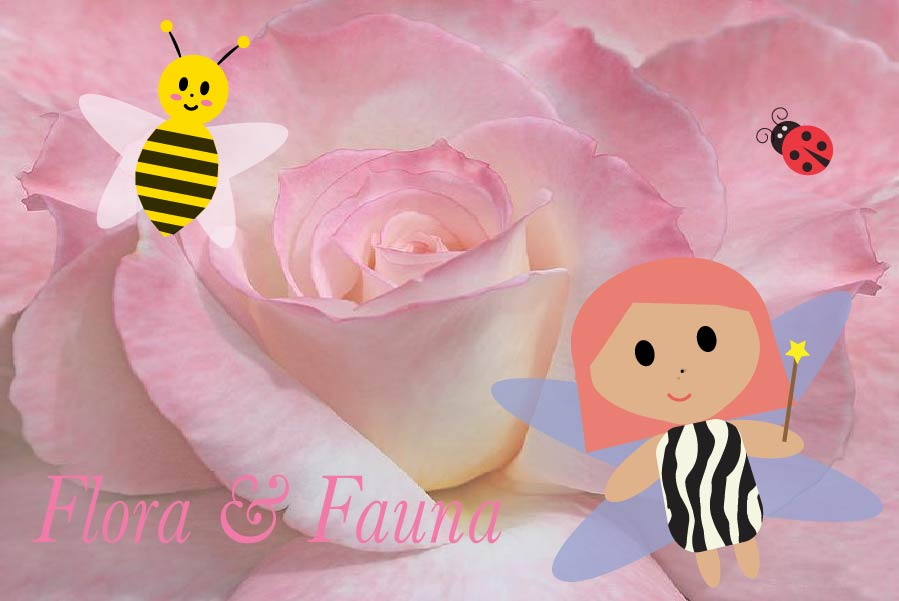

Home |
Photoshop |
Illustrator |
Animate |
InDesign |
Contact |

☆
In Illustrator, I wanted to create a fantasy-land
amongst flower petals. I created characters that
would live in this flora world: a ladybug, a bee, and a fairy all inviting the visitor to take a peek at her home.